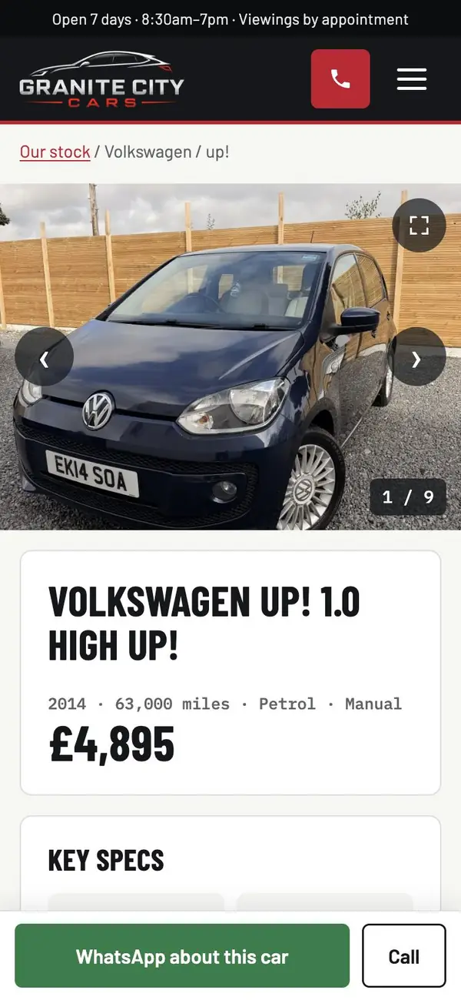

Granite City Cars: off a slow dealer platform, onto a site they own.
A used-car dealer was paying monthly for a platform that loaded slowly on phones. We rebuilt the public website and the system behind it, so they run stock, leads and invoices themselves.


The same car, on the same phone.
Before, buyers scrolled past the photos to find a form. Now WhatsApp and Call are on screen from the start, and the WhatsApp message already names the car.
Read the full build diaryWhat we found on the old site. Every screen side by side. The buyer's journey step by step, and the admin GCC run from a phone.
A slow site on someone else's platform.
On a phone, the old site took nearly ten seconds to show its main content. The page jumped around while it loaded. Google measured its mobile speed at 48 out of 100.
The dealer paid every month for it but didn't own the site. Every change went through the platform.
Fast, theirs, and easy to run.
- A site that loads fast on a phone, where most buyers browse
- Keep every old link working so Google rankings carry over
- Add and sell cars from a phone, without calling anyone
- Leads, customers and invoices in one place
- Hosting in the dealer's own name
The website, and the system behind it.
Built to be found and to sell
- Every page rebuilt to load fast on a phone
- All 87 old addresses redirected, so no lost links or rankings
- Car photos resized and compressed automatically
- Sell your car, part exchange and find-me-a-car forms, with photo upload straight from an iPhone
- Structured data so Google understands each car and the business
Run from a phone
- Add a car with a number-plate lookup, then photos from the camera
- Mark a car sold and go straight to the invoice
- Invoices as PDFs, with void and reissue, and a CSV export
- Leads inbox with one-tap WhatsApp and call, and repeat-customer matching
- The website updates itself a few minutes after an edit
Before and after, measured the same way.
Google's own speed test (Lighthouse), mobile, on the old site and the new one.
| MOBILE | BEFORE (CAR DEALER 5) | AFTER (NEW SITE) |
|---|---|---|
| Performance score | 48 | 97–100 |
| Accessibility score | 82 | 100 |
| Best practices score | 85 | 100 |
| Main content visible | 9.9 s | 1.3–2.4 s |
| Page jumping while loading | 0.834 | 0 |
Homepage, PageSpeed Insights. Before: the old site, 10 Nov 2026. After: the new site on the live address, 17 and 19 Nov 2026 (three runs; scores move a little between runs). On a car page, the main photo now appears in 2.7 seconds instead of 32.
Want the detail? The build diary has what we found, every screen side by side and the admin, step by step. Plus the security audit before go-live. Or read why a good website is about the phone ringing.
Read the build diary →Want the same for your business?
Book a free 15-minute call and we'll tell you straight what your current site is costing you.